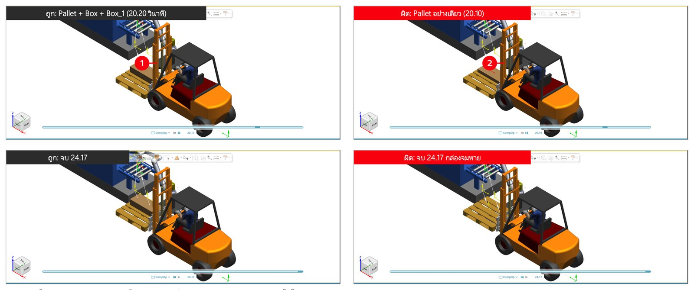

03. Basic Process
วัตถุประสงค์การเรียนรู้
- จัดวางชิ้นส่วนในเซลล์ด้วย Placement Manipulator และ Relocate แล้วติด Gripper เข้ากับหุ่นยนต์ด้วย Mount Tool
- สร้าง Operation (Compound, Object Flow, Pick and Place) ตั้ง Current Operation และเล่น simulation
- ตรวจ Reach Test ปรับ Motion Type/Speed ใน Path Editor แล้วเทียบเวลา และตรวจ Collision
- ต่อลำดับงานด้วย Link อ่าน cycle time จาก Gantt และสั่งรถยกด้วย Device Operation + Attach Event
- ส่งงานด้วย Movie Recorder (.mp4) และ Export to Web (.html)
เซลล์ตัวอย่างที่มี Machine สายพาน หุ่น UR20 พาเลท และรถยก — ทำทีละขั้นรวม 28 ขั้น ตั้งแต่จัดวาง ติดเครื่องมือ สร้างงานหยิบ-วาง ตรวจเอื้อมถึงและตรวจชน ไปจนถึงต่อลำดับ 2 กล่อง อ่าน cycle time 14.17 วินาที สั่งรถยก และส่งงาน
ภาพรวม: 9 หัวข้อ
| ลำดับ | หัวข้อ | ทำอะไร |
|---|---|---|
| 01 | Placement / Relocate | วาง Pallet, Box, UR20 เข้าที่ |
| 02 | Mount Tool | ติด Vacuum_Gripper เข้า UR20 |
| 03 | Object Flow | Box_Op เลื่อนกล่องบนสายพาน |
| 04 | Pick and Place | RB1 หุ่นหยิบกล่องวางบนพาเลท |
| 05 | Reach Test | หุ่นเอื้อมถึงทุก location ไหม |
| 06 | Path Editor | Motion Type + Speed แล้วเทียบเวลา |
| 07 | Collision | หัวจับชน Machine ไหม |
| 08 | SOP / Gantt | กล่องที่ 2 และ cycle time 14.17 วินาที |
| 09 | Forklift | Device Operation + Attach Event |
สิ่งที่ต้องมี: Process Simulate · โฟลเดอร์
03_BASIC_PROCESS ที่มี Library\ (ไฟล์ .cojt 7 ชิ้น)
และไฟล์ 0_ ถึง 3_Basic_Process .psz
Workflow: 5 ช่วง 4 ไฟล์
| ช่วง | งาน | ทำอะไร | ไฟล์ |
|---|---|---|---|
| 01 | Layout | Placement, Relocate, Mount Tool | 0_Layout |
| 02 | Operation | Object Flow, Pick and Place, Reach, Path Editor, Collision | 1_Operation |
| 03 | SOP | กล่องที่ 2 + อ่าน cycle time จาก Gantt | 2_SOP |
| 04 | Forklift | Pose, Device Operation, Attach Event | 3_Forklift |
| 05 | ส่งงาน | Movie Recorder และ Export to Web | ทุกไฟล์ |
ขั้นที่ 1: ตั้ง System Root แล้วเปิด 0_Basic_Process_Layout
- 1File
- 2Disconnected Study
- 3Open in Standard Mode
- 4เลือก 0_Basic_Process_Layout
- 5Open
ข้อควรจำ: System Root บนหน้า Welcome ต้องเป็น
...\03_BASIC_PROCESS\Library ก่อนเปิดไฟล์ ไม่เช่นนั้นชิ้นส่วนจะไม่ขึ้นขั้นที่ 2: เป้าหมายจัดของในเซลล์ให้เข้าที่
- 1Machine วางไว้แล้วที่ x -3400
- 2Pallet, UR20, Box ซ้อนกันที่จุด 0
- 3Pallet y -1200 (ขั้น 3)
- 4UR20 ขึ้นขาตั้ง z 750 (ขั้น 5)
- 5Box ปลายสายพาน (ขั้น 4)
ก่อน: ไฟล์ 0 · หลัง: เท่ากับไฟล์ 1 (รูปซ้าย = ก่อน, รูปขวา = หลัง)
ขั้นที่ 3: Placement Manipulator เลื่อน Pallet ไป Y -1200
- 1เลือก Pallet แล้วกด Placement Manipulator เลือกแกน Y
- 2พิมพ์ -1200 กด Enter
- 3Close
- 4Pallet เลื่อนออกมาข้างหุ่น
- 5ป้ายบอก Y: -1200.00
หมายเหตุ: ช่องตัวเลขคือระยะที่เลื่อนจากตำแหน่งเดิม (ไม่ใช่ตำแหน่งสุดท้าย) ลากลูกศรในหน้าจอ 3D ก็ได้ แต่พิมพ์ตัวเลขจะได้ค่าตรงกับไฟล์เฉลย
ขั้นที่ 4: Placement พิมพ์ตำแหน่ง X Y Z ให้ Box
- 1เลือก Box เปิด Placement Manipulator แล้วกดลูกศรล่างซ้ายเพื่อขยาย
- 2แถวบน = ตำแหน่ง: X = -5400
- 3Z = 800
- 4แถวล่าง = มุมหมุน Rx Ry Rz (ไม่เปลี่ยน)
- 5Close
- 6Box อยู่ปลายสายพานของ Machine
ข้อควรจำ: ถ้าต้องหมุนด้วย ให้พิมพ์มุมหมุน (แถวล่าง) ก่อน แล้วค่อยพิมพ์ตำแหน่ง (เหมือนการวางรถยกในขั้นที่ 21)
ขั้นที่ 5: Relocate ยก UR20 ขึ้นขาตั้งด้วย Frame by 6 values
- 1เลือก UR20 กด Relocate From frame = Self
- 2To frame กดลูกศรข้างช่อง
- 3Frame by 6 values
- 4พิมพ์ Z = 750 (0, 0, 750)
- 5OK
- 6Apply แล้ว Close
- 7UR20 อยู่บนขาตั้ง
ขั้นที่ 6: Mount Tool ติด Vacuum_Gripper เข้ากับ UR20
- 1เลือก UR20 > แท็บ Robot > Mount Tool แล้วคลิก Vacuum_Gripper ใน Objects
- 2Frame ของกริปเปอร์ = Base Frame (ขึ้นเอง)
- 3Mount on = UR20
- 4Frame ของหุ่น = TOOLFRAME
- 5Apply แล้ว Close
- 6กริปเปอร์ติดที่ปลายแขนหุ่นและจะเคลื่อนตามแขน
ขั้นที่ 7: ก่อนปิดหรือเปิดไฟล์ถัดไป ตอบ No (หรือ Save As)
- 1ตอบ No = ไม่เก็บสิ่งที่ลอง ไฟล์ตัวอย่างไม่เปลี่ยน
- 2ถ้าจะเก็บงานใช้ File > Disconnected Study > Save As ชื่อใหม่
บทถัดไป: เปิด 1_Basic_Process_Operation (เฉลยของบท 0) ทุกคนจะเริ่มบท 1 จากจุดเดียวกัน
ขั้นที่ 8: New Compound Operation (กล่อง CompOp)
- 1แท็บ Operation ลูกศรใต้ New Operation
- 2New Compound Operation
- 3Name (ไฟล์ตัวอย่าง = CompOp)
- 4Scope = Operation Root
- 5OK
ข้อควรจำ: Compound Operation คือกล่องรวม operation ย่อย ใช้ตั้งเป็น Current Operation แล้วเล่นทั้งชุด
ขั้นที่ 9: New Object Flow Operation ให้ Box (Box_Op)
- 1Name = Box_Op
- 2Object = Box (เลือก Box ก่อนเปิดคำสั่ง)
- 3Start Point = ตำแหน่งปัจจุบัน
- 4End Point คลิกช่องเขียวแล้วคลิกจุดปลายทาง
- 5Duration = 5 วินาที
- 6OK
- 7Box เลื่อนตามสายพานมาถึงหุ่น
ในไฟล์ตัวอย่าง: Box_Op มี 2 จุด loc1 > loc และใช้เวลา 5 วินาที (0-5 ใน Sequence Editor)
ขั้นที่ 10: New Pick and Place Operation ให้ UR20 (RB1)
- 1Name
- 2Robot = UR20 (เลือกหุ่นก่อน)
- 3Gripper = Vacuum_Gripper
- 4ท่าหยิบ CLOSE
- 5ท่าวาง OPEN
- 6Pick คลิกจุดหยิบ (บน Box)
- 7Place คลิกจุดวาง (บน Pallet)
- 8OK
- 9ผล: RB1 มี 9 location: bPick > pick > aPick > via > bPlace > place > aPlace > via > bPick
หมายเหตุ: ภาพในบทนี้กด Cancel แล้วใช้ RB1 ที่มีอยู่ในไฟล์ (ผู้จัดทำยังไม่เคยทดสอบปุ่ม OK ของคำสั่งนี้)
ขั้นที่ 11: Set Current Operation แล้วเล่นได้ 9.65 วินาที
- 1เลือก CompOp > Set Current Operation
- 2Box_Op 0-5 วินาที
- 3RB1 5-9.65 วินาที (4.65)
- 4จบ 9.65
- 5เริ่ม: Box ที่ปลายสายพาน
- 6จบ: Box บน Pallet
แกนเวลาเริ่มที่ 0.00 วินาที และจบที่ 9.65 วินาที
ขั้นที่ 12: Reach Test หุ่นเอื้อมถึงทุก location ไหม
- 1เลือก RB1 แท็บ Robot > Reach Test (Robot = UR20 ขึ้นเอง)
- 2ทุก location มีเครื่องหมายถูกสีเขียว = เอื้อมถึงครบ 9 จุด
- 3Close
ทำไมย้ายมาบทนี้: Reach Test ทดสอบกับ location เท่านั้น ไฟล์ 0 ยังไม่มี operation รายการจึงว่าง ใช้ตรวจ layout ก่อนส่งงานลูกค้า ถ้าขึ้นกากบาทให้ย้ายหุ่นหรือชิ้นงานแล้วทดสอบใหม่
ขั้นที่ 13: Path Editor ดู Motion Type, Speed, Zone ของ RB1
- 1เลือก RB1 แท็บ Path Editor กด Add Operations to Editor
- 2ระยะเวลารวม RB1 = 4.65 วินาที
- 3Motion Type ทุกจุด = PTP (Joint)
- 4Speed = 100 %
- 5Zone = fine (หยุดตรงจุด)
- 6OLP Commands ที่ pick / place = คำสั่งจับ / ปล่อย
อ่านค่า: ค่าทุกจุดเป็นค่าเริ่มต้นที่ PS สร้างให้ ขั้นถัดไปจะเปลี่ยนช่วงหยิบ-วางเป็นเส้นตรง (LIN) แล้วเทียบเวลา
ขั้นที่ 14: Teach Pendant เปลี่ยน pick เป็น LIN 300 mm/s
- 1เลือก pick ใน Path Editor แท็บ Robot > Teach Pendant
- 2Motion Type คลิกช่องค่าให้ขึ้นรายการ
- 3กล่อง OLP Commands: Drive CLOSE, WaitDevice CLOSE, Grip TCPF
- 4เลือก LIN (Speed เปลี่ยนเป็น 1000 mm/s)
- 5Speed = 300 mm/s
ทำซ้ำ: กดลูกศร > (Next) บน Teach Pendant ไปที่ aPick, place, aPlace แล้วตั้ง LIN 300 mm/s เหมือนกัน · ก่อนพิมพ์ Speed ให้ลบค่าเดิมให้หมด (ถ้าไม่ลบจะได้ค่า 99999)
ขั้นที่ 15: เล่นใหม่แล้วเทียบเวลาก่อน/หลัง
- 1ก่อน 4.65
- 2หลัง 7.11
- 3แถวที่เปลี่ยนแสดง LIN / 300 mm/s
รูปซ้าย = ก่อน (PTP ทุกจุด) · รูปขวา = หลัง (LIN 300 mm/s 4 จุด)
| รายการ | ก่อน | หลัง |
|---|---|---|
| RB1 | 4.65 วินาที | 7.11 วินาที |
| pick / aPick / place / aPlace | 0.31-0.40 วินาทีต่อจุด | 0.97 วินาทีต่อจุด |
| CompOp (จบ simulation) | 9.65 วินาที | 12.11 วินาที |
สรุป: LIN 300 mm/s ช้ากว่า PTP 100 % แต่เดินตรงปลอดภัยกว่าตอนเข้าใกล้ชิ้นงาน ต้องเลือกให้สมดุลระหว่างเวลากับความปลอดภัย
ขั้นที่ 16: Collision Viewer สร้างชุดตรวจชน
- 1New Collision Set (ปุ่มแรก)
- 2แท็บ Collision Viewer ใต้หน้าจอ
- 3Check: Vacuum_Gripper, Box
- 4With: Machine
- 5OK
- 6ได้ new_collision_set
ขั้นที่ 17: เปิด Collision Mode แล้วเล่นผล: ไม่ชน
- 1แท็บ Home > Collision Mode (ปุ่มเป็นสีฟ้า = เปิด)
- 2เล่น CompOp ตลอด 12 วินาที Collision Viewer ขึ้น No pairs to display (ไม่ชน)
- 3ถ้าชน ชิ้นที่ชนจะเป็นสีแดงและขึ้นคู่ที่ชนในรายการ
ใช้กับลูกค้า: ตรวจชนทุกครั้งหลังแก้ทางเดิน (เช่น เปลี่ยนเป็น LIN ในขั้น 14) เพราะทางเดินใหม่อาจเฉียดเครื่อง
ขั้นที่ 18: Insert Component ใส่ Box ใบที่ 2 จาก Library
- 1แท็บ Modeling > Insert Component ไปที่โฟลเดอร์ Library
- 2Box.cojt
- 3Preview แสดงชิ้นงาน
- 4Open
- 5Box ใหม่ขึ้นใน Parts (ไฟล์ 2 ตั้งชื่อ Box_1)
ขั้นที่ 19: ไฟล์ 2 เรียงลำดับ 4 operation ด้วย Link
- 1Box_Op 0-5 วินาที
- 2RB1 5-9.72 วินาที
- 3Box_1_Op 5-10 วินาที เริ่มพร้อม RB1 (ขนานกัน)
- 4RB2 10-14.17 วินาที
- 5จบ 14.17 วินาที
Link: เลือก 2 operation ใน Sequence Editor ตามลำดับ แล้วกดปุ่ม Link — ตัวที่ 2 จะเริ่มเมื่อตัวแรกจบ (ลูกศรสีดำ)
ขั้นที่ 20: อ่าน cycle time ทำไมไม่ใช่ผลบวกตรงๆ
- 19.70: กล่องแรกวางแล้วกล่องที่ 2 มาถึงปลายสายพานพอดี
- 214.17: กล่อง 2 ใบซ้อนบน Pallet
| วิธีคิด | ผล |
|---|---|
| ผลบวกตรงๆ: 5 + 4.72 + 5 + 4.17 | 18.89 วินาที |
| เวลาจริงจาก Gantt | 14.17 วินาที (เร็วกว่า 4.72 วินาที) |
ข้อคิด: Box_1_Op วิ่งระหว่างที่หุ่นทำ RB1 (ทำงานขนานกัน) cycle time จึงสั้นกว่าผลบวก การจัดลำดับให้งานทับกันได้คือวิธีลดเวลาโดยไม่ต้องเร่งหุ่น
ขั้นที่ 21: ใส่ Forklift แล้ววางที่ (3500, -1200, 0) หมุน Rz 180
- 1Insert Component > Forklift.cojt > Open
- 2Preview รถยก
- 3Placement ขยายแล้วพิมพ์ Rz = 180 ก่อน
- 4แล้ว X = 3500
- 5Y = -1200
- 6รถยกหันงาเข้าหา Pallet
ขั้นที่ 22: Object Flow ของรถยกวิ่งไปที่ Pallet (Forklift_Op)
- 1Name = Forklift_Op
- 2Object = Forklift
- 3End Point คลิกช่องเขียวแล้วคลิก Pallet ในหน้าจอ 3D
- 4Duration 5 วินาที
- 5รถยกที่จุดเริ่ม
- 6ปลายทาง: Pallet
ระวัง: ถ้า Objects tree ถูกหน้าต่างบัง ให้คลิก Pallet ในหน้าจอ 3D แทน (คลิกใน tree ไม่ติด)
ขั้นที่ 23: Pose Editor ของรถยก HOME และ UP (j1 = 500)
- 1เลือก Forklift > Modeling > Pose Editor: HOME, UP
- 2เลือก UP กด Jump
- 3กด New ดู Joint Jog: ท่าปัจจุบัน UP
- 4j1 = 500 mm (ยกงาขึ้น)
- 5ช่วงที่ยกได้ 0-1500
- 6งายกขึ้นในหน้าจอ 3D
หมายเหตุ: Edit เป็นสีเทาเพราะ pose มาจาก Library (แก้ได้ใน Modeling Scope แบบบท Kinematics) ภาพนี้กด Cancel แล้ว Jump กลับ HOME
ขั้นที่ 24: New Device Operation สั่งรถยกยกงา (Forklift_UP)
- 1Name (ไฟล์ตัวอย่าง = Forklift_UP)
- 2Device = Forklift (เลือกก่อนเปิดคำสั่ง)
- 3From pose = ท่าปัจจุบัน
- 4To pose = UP
- 5Duration = 5 วินาที
- 6OK
- 7ในไฟล์ 3: Forklift_UP ต่อจาก Forklift_Op จบที่ 24.17 วินาที
ขั้นที่ 25: Attach Event ติด Pallet + Box + Box_1 กับงารถยก (lnk2)
- 1Pallet
- 2Box
- 3Box_1
- 4To Object = lnk2 (link ของงา: กด + หน้า Forklift ใน Objects)
- 5Start Time = 0
- 6After Start of Task
- 7Forklift มีชิ้นย่อย (lnk) ให้เลือก
วิธีเปิดหน้าต่างนี้: คลิกแถบ
Forklift_UP ใน Sequence Editor > Operation > New Event > Attach Event
(ภาพนี้คือ Edit Event ของ event ในไฟล์เฉลย)ขั้นที่ 26: ข้อควรระวัง — ติดแค่ Pallet กล่องจะไม่ยกตาม

| ติด Pallet + Box + Box_1 (ถูก) | ติดแค่ Pallet (ผิด) | |
|---|---|---|
| ที่ 20.20 วินาที | กล่องยกขึ้นพร้อมพาเลท | พาเลทยกขึ้น แต่กล่องค้างที่ระดับเดิม |
| จบที่ 24.17 วินาที | กล่องอยู่บนพาเลท | กล่องจมทะลุพาเลทและหายไปใต้พาเลท |
ขั้นที่ 27: Movie Recorder อัดวิดีโอ .mp4
- 1แท็บ Operation > Movie Recorder แล้วกดเฟือง (Settings)
- 2ปุ่มแดง = Record แล้วกด Play
- 3Stop เมื่อเล่นจบ
- 4ป้าย REC ขึ้นในหน้าจอ 3D ระหว่างอัด
- 5Destination โฟลเดอร์เก็บไฟล์
- 6Format MPEG-4 (.mp4)
- 7ความละเอียด FullHD
- 8OK
ขั้นที่ 28: Export to Web ส่งงานให้คนที่ไม่มี Process Simulate
- 1File > Import / Export > Export to Web แล้วตั้ง File name .html
- 2Launch in browser เปิดไฟล์ทันทีหลังสร้าง
- 3Level of details Low = ไฟล์เล็ก
- 4ติ๊ก Include simulation
- 5Operation คลิกช่องเขียวแล้วคลิก CompOp
- 6OK
ผลลัพธ์: ได้ไฟล์ HTML ไฟล์เดียว เปิดด้วย browser หมุนดูโมเดลและเล่น simulation ได้ (ตัวอย่างไฟล์จริง:
02_KINEMATICS\KINEMATICS_WebView.html)ไฟล์ในบทเรียนและสิ่งที่อยู่ในแต่ละไฟล์
| ไฟล์ | สถานะ layout | Operation |
|---|---|---|
0_Basic_Process_Layout.psz | Machine x -3400 / Pallet, UR20, Box ที่จุด 0 | ไม่มี |
1_Basic_Process_Operation.psz | Pallet y -1200, UR20 z 750 + Gripper, Box (-5400, 0, 800) | CompOp: Box_Op + RB1 = 9.65 วินาที |
2_Basic_Process_SOP.psz | + Box_1 ที่ตำแหน่งเดียวกับ Box | + Box_1_Op + RB2 = 14.17 วินาที |
3_Basic_Process_Forklift.psz | + Forklift (3500, -1200, 0, Rz 180) pose HOME / UP | + Forklift_Op + Forklift_UP = 24.17 วินาที |
Library\ | Box, Cobot_Stand, Forklift, Machine, Pallet, Vacuum_Gripper, Robots\UR20 — ใช้เป็น System Root | |
เช็กลิสต์: ทำได้ครบหรือยัง
| ข้อ | สิ่งที่ต้องทำได้ | ตรวจด้วย |
|---|---|---|
| 1 | วางของด้วย Placement (แกน / พิมพ์ค่า) และ Relocate | ตำแหน่งตรงกับไฟล์ 1 |
| 2 | Mount Tool | กริปเปอร์ติดปลายแขน UR20 |
| 3 | สร้าง Compound, Object Flow, Pick and Place | CompOp > Box_Op, RB1 |
| 4 | Reach Test | ทุก location เป็นเครื่องหมายถูกสีเขียว |
| 5 | เปลี่ยน Motion Type / Speed แล้วเทียบเวลา | RB1 4.65 → 7.11 วินาที |
| 6 | สร้าง Collision Set และอ่านผล | No pairs to display |
| 7 | อ่าน cycle time จาก Gantt | อธิบายได้ว่าทำไม 14.17 ไม่ใช่ 18.89 |
| 8 | Device Operation + Attach Event ให้รถยก | พาเลทและกล่องยกขึ้นพร้อมกัน |
| 9 | อัดวิดีโอ / Export to Web | ได้ไฟล์ .mp4 / .html |
ปัญหาที่พบบ่อยและวิธีแก้
| อาการ | วิธีแก้ |
|---|---|
| เปิด .psz แล้วชิ้นส่วนไม่ขึ้น | System Root ต้องชี้ 03_BASIC_PROCESS\Library แล้วเปิดไฟล์ใหม่ |
| เมนูลูกศร To frame ปิดก่อนคลิก | กดลูกศรใหม่ แล้วคลิก Frame by 6 values ทันที |
| Reach Test รายการว่าง | ต้องมี operation / location ก่อน (ทดสอบในไฟล์ 1) |
| แก้ค่าในตาราง Path Editor ไม่ได้ | เลือก location แล้วใช้ Teach Pendant |
| พิมพ์ Speed แล้วได้ 99999 | ลบค่าเดิมในช่องให้หมดก่อนพิมพ์ |
| End Point ของ Object Flow ไม่ขึ้น | tree ถูกหน้าต่างบัง ให้คลิกชิ้นงานในหน้าจอ 3D แทน |
| รถยกยกพาเลทแต่กล่องค้าง | ใส่ Box, Box_1 ใน Attach ด้วย และ To Object = lnk2 |
| ปิดไฟล์แล้วถาม Save | No = ไม่เก็บสิ่งที่ลอง ถ้าจะเก็บใช้ Save As ชื่อใหม่ |